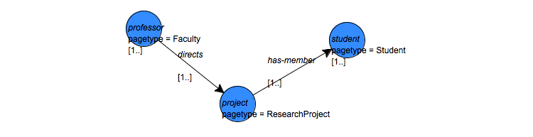

In addition to being able to extract data in the form of subgraphs, the QGraph language provides the ability to update data—add or delete objects, links, or attributes—by executing queries. Although much of this functionality remains to be implemented in Proximity, you can currently use QGraph queries to add new links to the data.
QGraph query processing separates the match phase from the update phase, thus any new links added to the database are not included in the query’s results. Importantly, the match phase applies to the data as it exists at the start of query execution. Applying an update cannot add new matches to the current query’s results.
The query created in the following exercise continues some of the assumptions we made in Exercise 5.5 about how the data in the ProxWebKB database correspond to entities and relationships in the world. Specifically, we interpret links from Faculty pages to ResearchProject pages to mean that this faculty member directs the project. Similarly, we interpret links from ResearchProject pages to Student pages to mean that that those students work on the project. Therefore, we infer that the faculty member supervises these students, allowing us to add links that make this relationship explicit. Although these assumptions may seem reasonable, it’s important to remember that we might be wrong in some or all of these assumptions. If we go on to use the results of this query in a model, appropriate care must be taken in applying the models’s predictions to real world situations.
Exercise 5.6. Adding links with a query:
The query created in this exercise is also available in the
Proximity 4.3 distribution in
$PROX_HOME/doc/user/tutorial/examples/add-supervises-links.qg2.xml.
Before beginning, make sure that you are serving the ProxWebKB database using Mserver. Start the Proximity Database Browser if it is not already running.
-
From the Query menu, choose New Query. Proximity starts the Query Editor.
-
Create an unannotated vertex labeled
project. Add the conditionpagetype = ResearchProjectto this vertex.
-
Create another vertex labeled
professor. Add the conditionpagetype = Facultyto this vertex. Add the annotation
[1..]to this vertex. -
Create a directed edge labeled
directsfrom the professor vertex to the project vertex. If you do not have automatic edge annotation enabled, add the annotation[1..]to this edge. -
Create a vertex labeled
student. Add the conditionpagetype = Studentto this vertex. Add the annotation
[1..]to this vertex. -
Create a directed edge labeled
has-memberfrom the project vertex to the student vertex. If you do not have automatic edge annotation enabled, add the annotation[1..]to this edge.The query should look similar to that shown below:
 -
In the Add-links area at the bottom of the query properties pane, click Add to specify the new links to be added.
The Query Editor creates a temporary link specification, vertex1, vertex2, attrname, "attrval", as an example to be edited with the correct values. (Because this temporary link specification uses vertex labels not present in the query, the status indicator now shows that the query is invalid.)
-
Replace the example link specification with
professor, student, link_type, "supervises"and press Tab.

The link specification states that we want to add links from objects matching the professor vertex to objects matching the student vertex, assigning the value supervises to a new link_type attribute for that link.
If the resulting container includes more than one subgraph that would create the same new link, only one instance of the new link is created. However, re-running the query creates a new container and thus a new set of identical links.
-
Make sure the query is valid by checking the status list at the bottom of the Query Editor window. If the query is not valid, examine the errors in the drop-down list and fix any problems before continuing.
-
[Optional] Add a name and description and save the query.
![[Caution]](images/caution.png)
The Proximity distribution includes the new query in the file
$PROX_HOME/doc/user/tutorial/examples/add-supervises-links.qg2.xml. Be careful not to overwrite this file. -
From the File menu, choose Run or press Ctrl-R to execute your query. Proximity prompts you for a name for the results container. Enter
project-teamsand click OK.Proximity opens a window to show you the a trace of the query execution. The last lines should be similar to the following excerpt (leading information showing elapsed time and execution thread has been omitted from the trace for brevity):
INFO kdl.prox.qgraph2.QueryGraph2CompOp - -> found 20 subgraphs INFO kdl.prox.qgraph2.QueryGraph2CompOp - -> query results saved in container: project-teams INFO kdl.prox.qgraph2.QueryGraph2CompOp - Adding links to database INFO kdl.prox.qgraph2.QueryGraph2CompOp - -> Adding add-link professor, student, link_type, "supervises":49 links created INFO kdl.prox.qgraph2.QueryGraph2CompOp - * query: done Status: finished running query
The trace includes a count of the number of links created. In this example, we added 49 new links to the database.
Close this window after the query finishes.
-
To explore the newly added links, browse the links having a value of supervises for the new link_type attribute by drilling down through the Link Attributes area in the Proximity Database Browser or typing
filter:/links/link_type/value/'supervises'in the Proximity Database Browser location bar and pressing Return. Proximity displays a list of the new links.